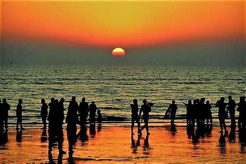
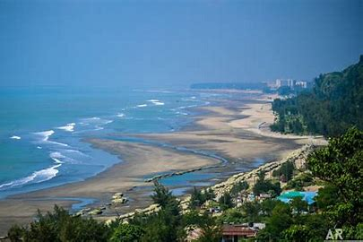

A comprehensive service website that offers everything you
need to enjoy the beauty and adventure of Cox's Bazar, the longest sea beach in
the world.
Are you ready to experience the magic of Cox's Bazar, the
longest sea beach in the world? If so, you have come to the right place. Cox's
Aura is your ultimate guide to everything that Cox's Bazar has to offer.
Whether you are looking for a relaxing getaway, a thrilling adventure, or a
cultural exploration, we have something for everyone. Cox's Aura is more than
just a website, it's a lifestyle. Join us and discover the best of Cox's Bazar
with Cox's Aura.
Why Choose Cox's Aura?
We are a one-stop platform that connects you with the best
travel agents, hotels, restaurants, bars, clubs, spas, and other services in
Cox's Bazar. We offer competitive prices, flexible packages, and personalized
recommendations based on your preferences and budget. When you book with us,
you can rest assured that you will receive quality, safety, and satisfaction
for every service you choose. We have a dedicated customer support team that is
available 24/7 to assist you with any queries or issues. But don't take our
word for it, see what our customers have to say about us on our testimonials
page.
What Services Do We Offer?

Travel Agent
Planning a trip to Cox's Bazar can be
challenging, especially if you are not familiar with the destination. That's
why we have a team of experienced and professional travel agents who can help
you with every aspect of your travel, from booking your flights, buses, or
trains, to arranging your visa, insurance, and local transportation. They will
also give you tips and advice on how to make the most of your time in Cox's
Bazar, and what to expect when you arrive. You can trust them to take care of
all the details, so you can focus on enjoying your trip. Some of the benefits
of booking with our travel agents are:
·
You can save time and money by letting them
find the best deals and options for you.
·
You can avoid the hassle and stress of
booking and managing your travel yourself.
·
You can get access to exclusive offers and
discounts that are not available elsewhere.

·
You can get expert guidance and support
throughout your trip, from departure to arrival.
Hotel Booking
Finding the right accommodation in Cox's
Bazar can be overwhelming, given the variety of options available. That's why
we have partnered with the best hotels in Cox's Bazar, ranging from
budget-friendly guesthouses to luxury resorts. You can compare prices, ratings,
amenities, and availability, and book your stay with just a few clicks. You can
also check out the photos and videos of the hotels, and see how they look in
real life. No matter what your taste and style, we have the perfect hotel for
you. Some of the benefits of booking with our hotels are:

·
You can enjoy a comfortable and clean room
with all the facilities and services you need.
·
You can experience the hospitality and
friendliness of the hotel staff and management.
·
You can take advantage of the hotel's
features and amenities, such as swimming pool, gym, spa, restaurant, bar, etc.
·
You can get free breakfast, wifi, parking,
and other perks when you book through us.
Restaurant Service
Eating out in Cox's Bazar can be a
delight, as you can sample a variety of cuisines, from local seafood to
international dishes. That's why we have curated a list of the best restaurants
in Cox's Bazar, where you can enjoy delicious food and excellent service. You
can browse menus, reviews, photos, and locations, and reserve your table
online. You can also get exclusive discounts and offers when you book through
us. Whether you are in the mood for a romantic dinner, a family feast, or a solo
snack, we have the right restaurant for you. Some of the benefits of booking
with our restaurants are:
·
You can taste the freshness and quality of
the ingredients and the dishes.
·
You can savor the flavors and aromas of the
different cuisines and specialties.
·
You can enjoy the ambiance and atmosphere of
the restaurant, whether it's cozy, elegant, or lively.
·
You can get complimentary drinks, desserts,
or appetizers when you book through us.
Bar Club
Having fun in Cox's Bazar can be easy, as you can
find many bars and clubs where you can enjoy music, drinks, and dancing. That's
why we have selected the most popular and lively bars and clubs in Cox's Bazar,
where you can meet new people and have a great time. You can check out the
events, promotions, and dress codes, and book your entry online. You can also
get access to VIP areas and free drinks when you book through us. Whether you
are looking for a night of partying, a chill hangout, or a live show, we have
the right bar or club for you. Some of the benefits of booking with our bars
and clubs are:
·
You can have fun and entertainment with the
music, lights, and sounds of the bar or club.
·
You can mingle and socialize with the locals
and other tourists who share your vibe and interests.
·
You can drink and dance to your heart's
content, without worrying about the price or the quality.
·
You can skip the line, avoid the cover
charge, and get the best seats when you book through us.
SPA
Relaxing in Cox's Bazar can be a treat, as you can find
many spas where you can pamper yourself with massages, facials, manicures,
pedicures, and more. That's why we have featured the most relaxing and
rejuvenating spas in Cox's Bazar, where you can unwind and refresh your body
and mind. You can view the services, prices, and ratings, and book your
appointment online. You can also get special deals and packages when you book
through us. Whether you need a full-body massage, a facial treatment, or a nail
polish, we have the right spa for you. Some of the benefits of booking with our
spas are:
·
You can relieve your stress and tension with
the gentle and soothing touch of the therapists.
·
You can restore your beauty and glow with
the natural and organic products and treatments.
·
You can indulge your senses and emotions
with the aromatherapy, music, and candles of the spa.
·
You can get a free consultation, a welcome
drink, and a gift bag when you book through us.
Others: Exploring Cox's Bazar can be an adventure, as you
can find many activities that can enhance your experience, such as water
sports, fishing, hiking, sightseeing, and more. That's why we have also
included other services that can make your vacation more memorable and
exciting. You can explore the options, read the descriptions, and book your
activity online. You can also get discounts and freebies when you book through
us. Whether you want to surf the waves, catch a fish, climb a hill, or visit a temple,
we have the right activity for you. Some of the benefits of booking with our
other services are:
·
You can have fun and challenge yourself with
the different activities and adventures.
·
You can discover and appreciate the natural
and cultural wonders of Cox's Bazar and its surroundings.
·
You can learn and develop new skills and
hobbies with the guidance and equipment of the instructors and operators.
·
You can get free transportation, snacks, and
souvenirs when you book through us.
Benefits for Solo Travelers
If you are traveling alone to Cox's Bazar, you might be
wondering if you can enjoy the destination as much as if you were with someone
else. The answer is yes, you can. In fact, there are many benefits of traveling
solo to Cox's Bazar, and we are here to help you make the most of them. Some of
the benefits of traveling solo to Cox's Bazar are:
·
You can have more freedom and flexibility.
You can decide when, where, and how to travel, without having to compromise or
negotiate with anyone else. You can also change your plans or itinerary as you
wish, depending on your mood and interests.
·
You can have more opportunities and
experiences. You can try new things, meet new people, and learn new cultures,
without being influenced or limited by anyone else. You can also challenge
yourself and step out of your comfort zone, and discover more about yourself
and the world.
·
You can have more savings and value. You can
save money by choosing the services and activities that suit your budget and
preference, without having to split the costs or pay extra fees with anyone
else. You can also get more value by booking with us, as we offer special
discounts and deals for solo travelers.
But traveling solo doesn't mean traveling alone. You can
always find company and support in Cox's Bazar, whether it's from our friendly
and helpful staff, our professional and reliable service providers, or our
welcoming and diverse community of travelers. You can also join our group tours
and events, where you can meet and connect with other solo travelers who share
your passion and curiosity for Cox's Bazar. You can also reach out to us
anytime if you need any assistance or advice. We are always here for you.
Benefits for Solo Girls
If you are a solo girl traveling to Cox's Bazar, you might
have some concerns or doubts about your safety and comfort. We understand that,
and we want to assure you that Cox's Bazar is a safe and friendly destination
for solo girls. We have taken extra measures to ensure that you can enjoy your
trip without any worries or hassles. Some of the benefits of traveling solo as
a girl to Cox's Bazar are:
·
You can feel safe and secure with our
female-friendly services and facilities. We have selected the hotels,
restaurants, bars, clubs, spas, and other services that are respectful and
welcoming to solo girls. We have also provided female-only options, such as
rooms, taxis, guides, and tours, where you can feel more comfortable and
relaxed.
·
You can feel empowered and inspired by the
local women and culture. Cox's Bazar is home to many inspiring and successful
women, who are involved in various fields and sectors, such as tourism,
education, health, environment, and social work. You can meet and interact with
them, and learn from their stories and experiences. You can also appreciate the
rich and diverse culture of Cox's Bazar, which celebrates and respects women
and their roles.
·
You can feel pampered and spoiled by the
special treats and surprises we have for you. We have arranged some exclusive
offers and gifts for solo girls, such as spa vouchers, beauty products,
jewelry, and more. You can also enjoy some special events and activities that
are designed for solo girls, such as yoga sessions, cooking classes, shopping
tours, and more.
Benefits for Solo Boys
If you are a solo boy traveling to Cox's Bazar, you might be
looking for some fun and adventure. We have that, and more. We have prepared
some amazing and exciting services and activities for solo boys, that will make
your trip unforgettable and enjoyable. Some of the benefits of traveling solo
as a boy to Cox's Bazar are:
·
You can feel adventurous and thrilled with
our action-packed services and activities. We have selected the best water
sports, fishing, hiking, sightseeing, and other activities that will challenge
and entertain you. We have also provided the best equipment and instructors,
who will ensure your safety and satisfaction.
·
You can feel social and connected with the
local people and culture. Cox's Bazar is a friendly and lively destination,
where you can meet and mingle with the locals and other tourists. You can also
learn and appreciate the history and heritage of Cox's Bazar, which is rich and
diverse. You can also enjoy the local cuisine and music, which are delicious
and vibrant.
·
You can feel rewarded and appreciated by the
special deals and bonuses we have for you. We have arranged some exclusive
discounts and freebies for solo boys, such as drinks, snacks, tickets, and
more. You can also enjoy some special events and activities that are designed
for solo boys, such as sports tournaments, trivia nights, pub crawls, and more.
How to Use Our Website?
Using our website is simple and convenient. Just follow
these steps:
1. Visit our website at [URL] and create your account. It's free
and easy, and it will give you access to all our services and offers.
2. Select the service you want to book from the menu bar. You can
choose from travel agent, hotel booking, restaurant service, bar club, spa, or
others.
3. Filter and sort the results according to your preferences and
budget. You can use the filters to narrow down your search, and the sort
options to rank the results by price, rating, popularity, or distance.
4. Click on the service you like and read the details and reviews.
You can find all the information you need about the service, such as the
features, benefits, terms and conditions, and customer feedback. You can also
see the photos and videos of the service, and get a glimpse of what it looks
like in reality.
5. Click on the book now button and enter your payment information.
You can pay securely online using your credit card, debit card, or PayPal. You
will receive an instant confirmation email with your booking details and
instructions.
6. Enjoy your service. You can now relax and enjoy your service,
knowing that you have booked the best deal with the best quality. You can also
contact us anytime if you need any help or support.
Contact Us
If you have any questions, feedback, or complaints, please
contact us at [email address] or [phone number]. We are always happy to hear
from you and to help you with any issue. You can also chat with us online using
the chat box on our website.
You can also follow us on [social media platforms] and share
your experience with us. We love to see your photos and videos, and to read
your stories and reviews. You can also join our community of Cox's Aura fans,
and connect with other travelers who share your passion for Cox's Bazar.
We appreciate your support and hope you have a wonderful
time in Cox's Bazar with Cox's Aura.